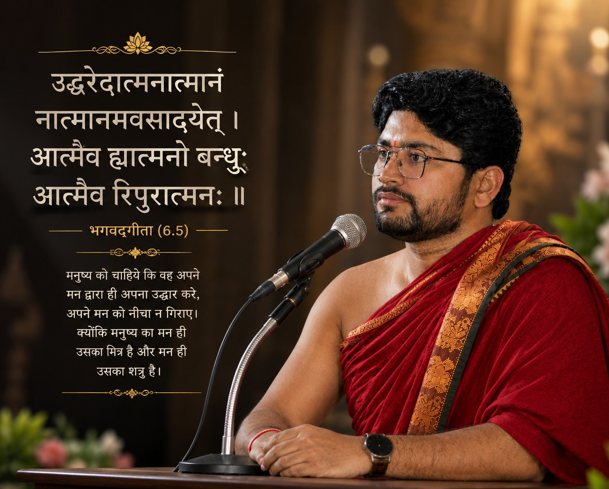

चार वेद
ऋग्वेद, यजुर्वेद, सामवेद और अथर्ववेद — संहिता का परिचय, प्रमुख सूक्त और विषय-विभाजन।
Shri Dham Vrindavan

Renowned Bhagavat Katha Vachak & Sanatan Scholar
नए लेख, उपयोगी ग्रंथ और आध्यात्मिक जानकारी पाने के लिए WhatsApp पर जुड़ें। वेबसाइट को अपने मित्रों और परिवार के साथ साझा करें या अपना सुझाव भेजें।
परम पूज्य आचार्य श्री देव तिवारी जी महाराज एक प्रख्यात कथावाचक, सनातन धर्म एवं ज्योतिष के ओजस्वी वक्ता हैं। सनातन संस्कृति और वैदिक परंपराओं की अलौकिक सुगंध को आधुनिक समाज तक सहज रूप से पहुँचाने के लिए वे निरंतर समर्पित हैं।
श्रीमद्भागवत कथा ज्ञान यज्ञ एवं श्रीराम कथा का भव्य आयोजन।
सटीक जन्मपत्री विश्लेषण, नवग्रह शांति एवं वैदिक उपाय।
आवास एवं व्यवसाय स्थल हेतु सकारात्मक ऊर्जा संतुलन।
जीवन समस्याओं का सनातन एवं आध्यात्मिक समाधान।
हर विषय का अलग विभाग — खोलें और उसी श्रेणी की सामग्री देखें।
वैदिक वाङ्मय, लौकिक साहित्य और लौकिक कथाएँ—तीनों के लिए अलग स्थान।
संहिता, ब्राह्मण, आरण्यक, उपनिषद् तथा वैदिक परंपरा से संबंधित अध्ययन-सामग्री, प्रसंग और व्याख्याएँ इस विभाग में व्यवस्थित की जाएँगी।
ऋग्वेद, यजुर्वेद, सामवेद और अथर्ववेद — संहिता का परिचय, प्रमुख सूक्त और विषय-विभाजन।
यज्ञीय परंपरा, कर्मकाण्डीय व्याख्याएँ, प्रतीक और वन-चिंतन की परंपरा।
ईश, केन, कठ, प्रश्न, मुण्डक, माण्डूक्य, तैत्तिरीय, ऐतरेय, छान्दोग्य और बृहदारण्यक उपनिषद् के प्रमुख विचार।
वेदाङ्ग, ऋषि-परंपरा, सूक्तों का अर्थ, शान्ति-पाठ और वैदिक जीवन-मूल्य।
महाकाव्य, खण्डकाव्य, नाटक, गद्य, काव्यशास्त्र तथा संस्कृत के अन्य लौकिक साहित्य से संबंधित रचनाएँ और परिचय यहाँ संकलित होंगे।
रामायण, महाभारत तथा रघुवंश, कुमारसम्भव, मेघदूत और नैषधीयचरित जैसी काव्य-परंपराएँ।
अभिज्ञानशाकुन्तलम्, मृच्छकटिकम्, स्वप्नवासवदत्तम्, उत्तररामचरितम् और मुद्राराक्षसम्।
कादम्बरी, दशकुमारचरित, गद्यकाव्य और संस्कृत कथात्मक साहित्य की विशेषताएँ।
रस, ध्वनि, रीति, वक्रोक्ति, औचित्य, अलंकार, छन्द और नाट्यशास्त्र का परिचय।
भारतीय संस्कृति, जीवन-मूल्यों और मानवीय संवेदनाओं से जुड़ी प्रेरक कथाओं का साहित्यिक कोना।
एक छोटे-से दीपक ने अँधेरी रात में अपना प्रकाश जलाए रखा। आँधी बार-बार उसे बुझाने आई, पर दीपक हर बार फिर जल उठा। पास खड़े यात्री ने पूछा—“तुम इतनी छोटी लौ होकर भी हार क्यों नहीं मानते?” दीपक मानो कह उठा—“मेरा काम अँधेरे से लड़ना नहीं, अपने हिस्से का प्रकाश देना है।”
संदेश: परिस्थितियाँ कैसी भी हों, अपने कर्तव्य और सद्भाव का प्रकाश बनाए रखें।
आपकी मौलिक कहानी, प्रेरक प्रसंग या साहित्यिक रचना हमें भेजें। समीक्षा के बाद उसे कथा-सागर में प्रकाशित किया जा सकता है।
इस विभाग में षोडश संस्कार, नित्य-नैमित्तिक कर्म, संध्योपासना, पूजन-पद्धति, हवन-विधान, देव-प्रतिष्ठा तथा विभिन्न धार्मिक अनुष्ठानों से संबंधित प्रामाणिक अध्ययन-सामग्री व्यवस्थित की जाएगी।
आचमन, प्राणायाम, संकल्प, संध्योपासना, गायत्री-जप और तर्पण का परिचय।
गर्भाधान से अन्त्येष्टि तक संस्कारों का उद्देश्य, अवसर और परंपरागत स्वरूप।
आवाहन, आसन, पाद्य, अर्घ्य, स्नान, वस्त्र, गन्ध, पुष्प, नैवेद्य और आरती के उपचार।
अग्नि-स्थापन, समिधा, आहुति, स्वाहा-मन्त्र, पूर्णाहुति और यज्ञ का भावार्थ।
नवग्रह-पूजन, रुद्राभिषेक, सत्यनारायण-व्रत, गृहप्रवेश और देव-प्रतिष्ठा का परिचय।
विभिन्न गृह्यसूत्रों और परंपराओं में विधि-भेद हो सकते हैं; स्थानीय कुलाचार तथा योग्य आचार्य के निर्देश का सम्मान करें।
ज्योतिष के सिद्धान्त, गणित और फलित पक्ष से संबंधित विषयों का क्रमबद्ध अध्ययन-संग्रह। जन्मकुण्डली को समझने, पंचांग-पठन और ग्रह-गोचर के शास्त्रीय आधार को जानने हेतु सामग्री यहाँ संकलित होगी।
सिद्धान्त, संहिता और होरा — ज्योतिष के प्रमुख विभाग तथा उनकी अध्ययन-पद्धति।
तिथि, वार, नक्षत्र, योग, करण, पक्ष, मास, अयन और पंचांग-पठन।
नवग्रहों के पारंपरिक कारकत्व, बारह राशियाँ, द्वादश भाव और सत्ताईस नक्षत्र।
लग्न, ग्रहस्थिति, दृष्टि, युति, भावेश, वर्गकुण्डली और जन्मपत्रिका की मूल संरचना।
विंशोत्तरी दशा का परिचय, अन्तर्दशा, ग्रह-गोचर और फल-विचार की पारंपरिक पद्धतियाँ।
मुहूर्त-निर्णय के आधार, शकुन, प्रश्न-ज्योतिष और ज्योतिषीय ग्रन्थों का परिचय।
बृहत्पाराशरहोराशास्त्र, बृहत्जातक, सारावली, फलदीपिका और मुहूर्तचिन्तामणि का परिचय।
ज्योतिष पारंपरिक शास्त्रीय विषय है; इसे निश्चित भविष्यवाणी या वैज्ञानिक रूप से सिद्ध परिणाम न मानें।
दैनिक पूजा, पर्व एवं विशेष अवसरों पर गाई जाने वाली आरतियों का सुव्यवस्थित संग्रह। प्रत्येक आरती के साथ शुद्ध पाठ और उपलब्ध होने पर उसका श्रव्य रूप भी जोड़ा जाएगा।
प्रत्येक आरती के साथ शुद्ध देवनागरी पाठ, अर्थ और उपलब्ध होने पर श्रव्य प्रस्तुति जोड़ी जाएगी।
प्रत्येक आराध्य के स्तोत्र अलग विभाग में व्यवस्थित रहेंगे। नीचे नाम चुनकर संबंधित स्तोत्रों का संग्रह देखें।
नीचे उपलब्ध स्तोत्रों को खोलकर पूरा पाठ पढ़ें। अन्य देवताओं एवं नवग्रहों के मूल संस्कृत पाठ के लिए प्रमाणित पाठ-संग्रह भी उपलब्ध कराया गया है।
श्री गणपति अथर्वशीर्ष का सम्पूर्ण पाठ।
नारद पुराण में प्रसिद्ध द्वादशनामात्मक स्तोत्र।
श्री गणेश की महिमा का स्तवन।
ऋग्वेदीय श्रीसूक्त का पाठ।
महालक्ष्मी की कृपा-प्रार्थना।
महालक्ष्मी की आठ श्लोकों में स्तुति।
संकटमोचन हनुमानाष्टक का पाठ।
श्री हनुमान के पराक्रम और भक्ति का स्तवन।
परम्परागत हनुमद्-उपासना का प्रार्थना-पाठ।
पुष्पदन्त विरचित शिवमहिमा स्तवन।
गोस्वामी तुलसीदास कृत शिव-स्तुति।
शिवलिङ्ग की स्तुति का अष्टक।
रावणकृत प्रसिद्ध शिव-स्तवन।
देवीमाहात्म्य से प्रसिद्ध सात श्लोक।
दुर्गासप्तशती का पारम्परिक अंग।
दुर्गासप्तशती पाठ का पारम्परिक अंग।
महिषासुरमर्दिनी देवी का स्तवन।
भगवान विष्णु के एक हजार नामों का पाठ।
आदि शंकराचार्य कृत विष्णु-प्रार्थना।
कुलशेखर आलवार कृत भक्ति-स्तवन।
श्री वल्लभाचार्य कृत कृष्ण-माधुर्य स्तवन।
श्री गोविन्द की स्तुति।
श्रीकृष्ण के स्वरूप और लीलाओं का स्तवन।
अच्युत, केशव और कृष्ण की स्तुति।
बुधकौशिक ऋषि प्रणीत श्रीराम रक्षा-पाठ।
श्रीराम की स्तुति का अष्टक।
श्रीराम के गुणों का स्तवन।
माँ वाग्देवी की प्रार्थना और स्तवन।
विद्या और वाणी की अधिष्ठात्री देवी की स्तुति।
माँ शारदा की स्तुति का पाठ।
नवग्रहों की सामूहिक स्तुति का प्रचलित पाठ।
ग्रह-शान्ति परम्परा में प्रचलित नवग्रह प्रार्थना।
नवग्रहों के संरक्षण हेतु कवच-पाठ।
वाल्मीकि रामायण के युद्धकाण्ड में वर्णित आदित्य-स्तवन।
भगवान सूर्य की अष्टक रूप में स्तुति।
सूर्यदेव के सहस्रनाम का पाठ।
चन्द्रदेव की स्तुति।
सोमदेव की शान्ति-प्रार्थना।
भूमिपुत्र मंगल की स्तुति।
अंगारक ग्रह की प्रार्थना।
सौम्य ग्रह बुध की स्तुति।
बुधदेव का अष्टक-पाठ।
देवगुरु बृहस्पति की स्तुति।
गुरु ग्रह की कृपा-प्रार्थना।
शुक्राचार्य एवं शुक्र ग्रह की स्तुति।
शुक्रदेव का अष्टक-पाठ।
शनैश्चर देव की प्रार्थना।
शनि-माहात्म्य परम्परा में प्रसिद्ध स्तवन।
शनिदेव का कवच-पाठ।
राहु ग्रह की शान्ति-प्रार्थना।
राहु से सम्बन्धित कवच-पाठ।
केतु ग्रह की स्तुति।
केतु से सम्बन्धित कवच-पाठ।
सूर्यदेव की वैदिक एवं पौराणिक प्रार्थनाएँ।
सूर्यमण्डल की स्तुति।
आदि शंकराचार्य कृत स्कन्द-स्तवन।
कार्तिकेय उपासना का प्रसिद्ध कवच।
स्कन्द भगवान की स्तुति।
श्री नरसिंह की रक्षा-प्रार्थना।
भगवान नरसिंह के उग्र एवं करुणामय स्वरूप का स्तवन।
शरणागत की रक्षा हेतु प्रार्थना।
काशी के अधिपति कालभैरव की स्तुति।
भैरव उपासना का कवच-पाठ।
बटुकभैरव की प्रार्थना।
श्री दत्तात्रेय की स्तुति।
दत्त सम्प्रदाय में प्रचलित स्तवन।
दत्तात्रेय उपासना का कवच।
प्रातःकालीन श्रीनिवास जागरण-पाठ।
तिरुमलापति की स्तुति।
भगवान के चरणों में शरणागति-पाठ।
माँ अन्नपूर्णा की अष्टक स्तुति।
अन्न एवं कृपा की अधिष्ठात्री देवी की प्रार्थना।
माँ गंगा की महिमा का स्तवन।
गंगा की पावनता एवं महिमा की स्तुति।
पण्डितराज जगन्नाथ कृत गंगा-स्तवन।
श्री वल्लभाचार्य कृत यमुना-स्तुति।
कालिन्दी एवं यमुना महारानी की प्रार्थना।
गरुड़ भगवान का प्रसिद्ध स्तवन।
वैनतेय की स्तुति।
वृन्दा एवं तुलसी देवी की स्तुति।
तुलसी महारानी का अष्टक-पाठ।
स्तोत्रों के सम्पूर्ण मूल पाठ, शुद्ध देवनागरी और पाठ-सन्दर्भ क्रमशः जोड़े जाएँगे।
भक्ति-परंपरा के पद, स्तुति, भजन और सामूहिक कीर्तन का विषयवार संग्रह।
राधा-कृष्ण पद, मुरली-माधुर्य, बाललीला, गोवर्धन और वृन्दावन-महिमा।
राम-नाम, रामचरितमानस के पद, राम-जन्म और राम-भक्ति पर आधारित भजन।
शिव-महिमा, रुद्र-स्तुति, भोलेनाथ और शिवरात्रि के भक्ति-पद।
दुर्गा, अम्बा, वैष्णो देवी और शक्ति-उपासना के भजन।
कबीर, सूरदास, तुलसीदास, मीराबाई और अन्य संत-कवियों के पद।
नाम-संकीर्तन, हरिनाम, सामूहिक भजन, धुन और उत्सव-कीर्तन।
मन की एकाग्रता, आत्मचिन्तन, उपासना और भारतीय साधना-परंपराओं का परिचय।
धारणा, ध्यान और समाधि की अवधारणा तथा नियमित अभ्यास की भूमिका।
जप के प्रकार, माला-जप, प्रणव-चिन्तन और मन्त्र-साधना की परंपरा।
श्वास-जागरूकता और योगशास्त्र में वर्णित प्राणायाम का परिचय; अभ्यास योग्य मार्गदर्शन में करें।
पतञ्जलि योगसूत्र, अष्टाङ्गयोग, यम-नियम और चित्तवृत्ति-निरोध की अवधारणा।
श्रवण, कीर्तन, स्मरण, अर्चन, वन्दन और आत्मनिवेदन जैसी भक्ति-पद्धतियाँ।
प्रार्थना, स्वाध्याय, मौन, सत्संग और दिनचर्या में आध्यात्मिक अनुशासन।
सभी उपलब्ध पुस्तकें, ज्योतिष-स्तोत्र ग्रंथ, ग्रंथकोश और प्रतियोगी परीक्षा सामग्री एक ही विभाग में।
अध्ययन, स्वाध्याय एवं संदर्भ के लिए ग्रंथों और उपयोगी अध्ययन-सामग्री का सुव्यवस्थित डिजिटल संग्रह। पुस्तक खोजें और इसी वेबसाइट पर ऑनलाइन पढ़ें।
NTA UGC-NET/JRF (संस्कृत कोड-25), State PSC (UPPSC, RPSC, MPPSC, BPSC), असिस्टेंट प्रोफेसर, प्रवक्ता, TGT, PGT, DSSSB एवं धर्मगुरु परीक्षाओं हेतु प्रामाणिक ग्रन्थ।
✍️ लेखक / Authors: दीपक कुमार एवं संजय दत्त भट्ट (Deepak Kumar & Sanjay Datt Bhat)[span_0](start_span)[span_0](end_span)
🏛️ प्रकाशक / Publisher: चौखम्बा सुरभारती प्रकाशन, वाराणसी (Chaukhamba Sura Bharati Prakashan)[span_1](start_span)[span_1](end_span)
📑 संस्करण / Edition: संशोधित एवं परिवर्धित द्वितीय संस्करण (2nd Edition) | ISBN: 978-93-89665-59-8[span_2](start_span)[span_2](end_span)
📚 विषय सूची: वैदिक साहित्य, दर्शन, व्याकरण एवं भाषाविज्ञान, काव्यशास्त्र, पुराणेतिहास, धर्मशास्त्र एवं पूर्व प्रश्नपत्र[span_3](start_span)[span_3](end_span) ।
विद्यार्थियों और जिज्ञासुओं के लिए संस्कृत, भारतीय दर्शन, साहित्य और शास्त्रों का क्रमबद्ध अध्ययन-कक्ष।
वर्ण-विचार, सन्धि, समास, कारक, प्रत्यय, धातुरूप, शब्दरूप और वाक्य-रचना।
काव्य, नाटक, गद्य, महाकाव्य, प्रमुख कवि और साहित्यिक आलोचना।
न्याय, वैशेषिक, सांख्य, योग, मीमांसा और वेदान्त — षड्दर्शन का परिचय।
शिक्षा, कल्प, व्याकरण, निरुक्त, छन्द और ज्योतिष का परिचय।
धर्मशास्त्र, पुराण, इतिहास, उपनिषद् और भगवद्गीता के चयनित विषय।
विषयवार प्रश्नोत्तर, वस्तुनिष्ठ प्रश्न, लघु-उत्तरीय अभ्यास और पुनरावृत्ति।



श्रीधाम वृंदावन • कथा बुकिंग एवं व्यक्तिगत परामर्श के लिए सीधे जुड़े
+91 7465040426